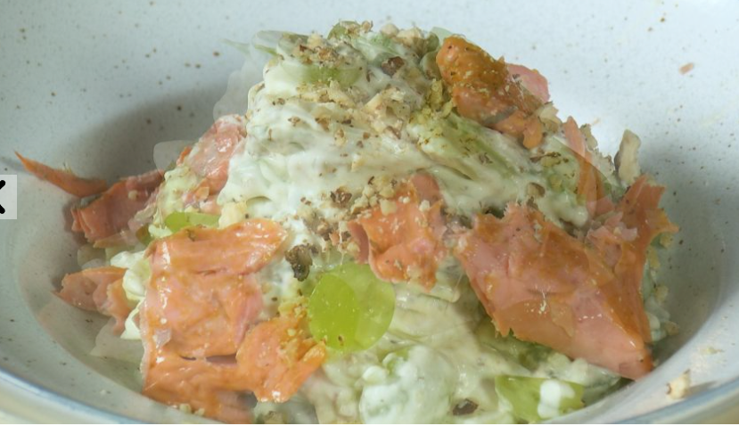

Уолдорф с красной рыбой

Ингредиенты:
- Красная копченая рыба 200 гр
- Яблоко зеленное 2 шт
- Сельдерей 3 стебля
- Виноград 10 шт
- Грецкий орех 1 горсть
- Сливки не менее 30%
- Горчица 1 чай ложка
- Яйцо - 1 шт
- Уксус - 1 ст.ложка
- Соль
- Сахар
Приготовление:
1. Нарезать рыбу кубиками.
2. Очистить и нарезать яблоко, сельдерей соломкой.
3. Виноград очистить от косточек и нарезать пополам.
4. Размолоть орехи.
5. Взбить сливки.
6. Взбить заправку - горчицу, яйцо, уксус.
7. Все смешать, посолить, поперчить.